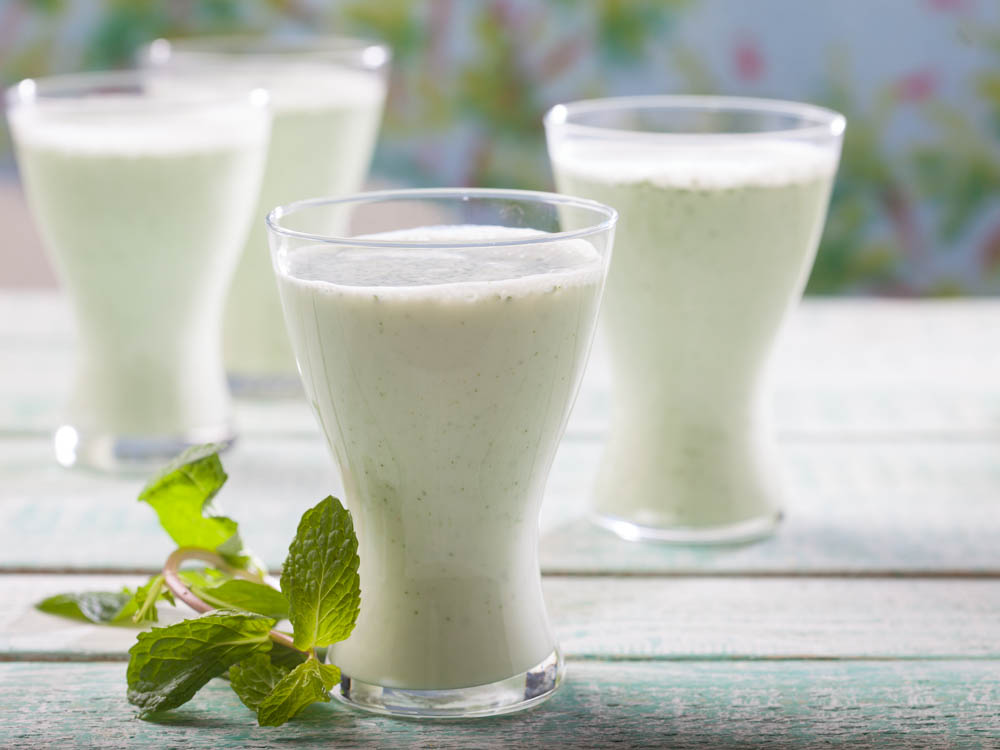
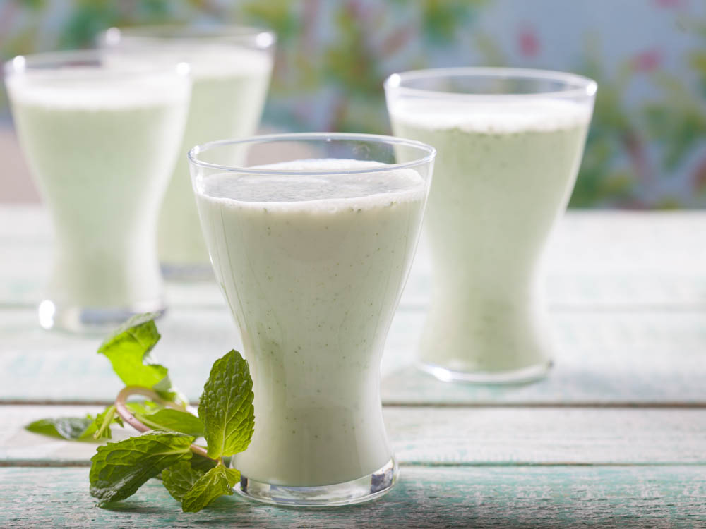
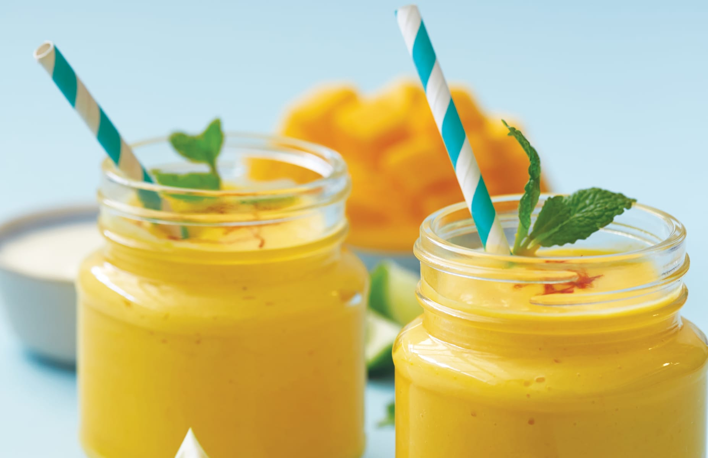
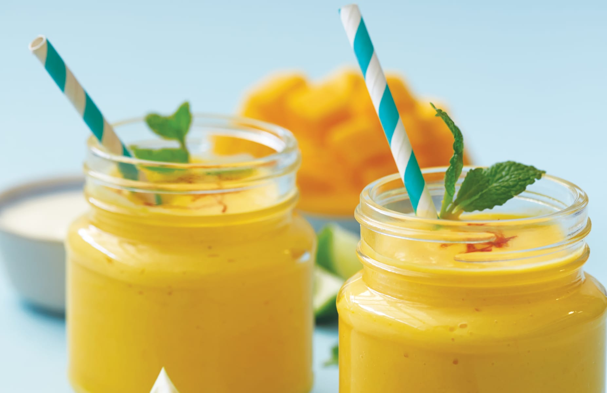

My Favorite Drinks
No meal is complete without the perfect beverage to compliment it. Although it's easy to get a glass of water wherever you go, I encourage you to try some of these beverages the next time you go out to eat at an ethnic restaurant!
Middle Eastern
Growing up, a summer day was never complete without a refreshing box of bonjus, a Lebanese orange juice.
If you ever get invited to a Middle Eastern household, you'll surely be offered a cup of Turkish coffee. Don't rinse it when you're done. You have to turn the cup upside down and let it dry. The remaining coffee stains are used to tell your fortune.
Although a cup of yogurt may not sound the most appetizing to drink, laban has a ton of health benefits, especially for probiotic health.
 

East and South Asian
Oolong tea, originating from Japan, has a unique taste from a blend of special oolong leaves. The calming tea tastes amazing on a rainy afternoon when curled up inside with a good book.
Although boba originated in Taiwan, it is extremely popular worldwide, especially in the United States. On the University of Michigan campus alone, you can find over ten boba shops within a mile radius.
Mango lassi has to hands-down be one of the best beverages ever made. The first time I had it, I was in love. I don't even like mangoes that much, but the rich taste and smooth texture is to die for.

 

Central American
Originating from Mexico, horchata is a spiced-based drink with the main ingredient being cinnamon. Mixed with milk and ice, the beverage is perfect at any time of the year, especially around the holidays after a hearty meal.
Pinolillo is a sweet cornmeal drink from Nicaragua. The chocolatey undertones make this beverage great for dessert.
Popular in Panama, chicheme is made from corn kernels, spices, and milk. Although there are variations across the country, La Chorrera is known for it.